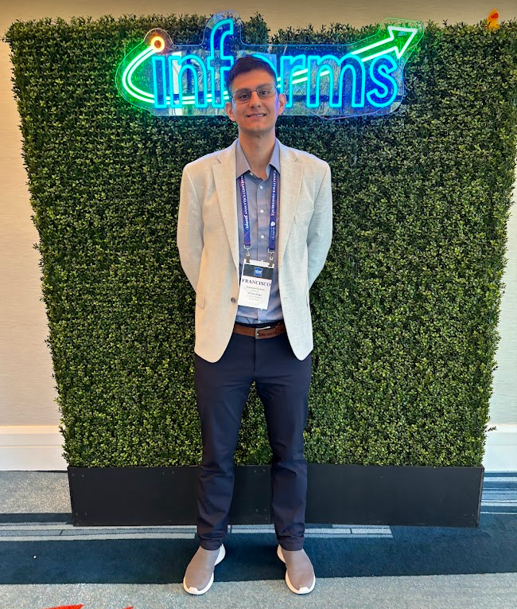
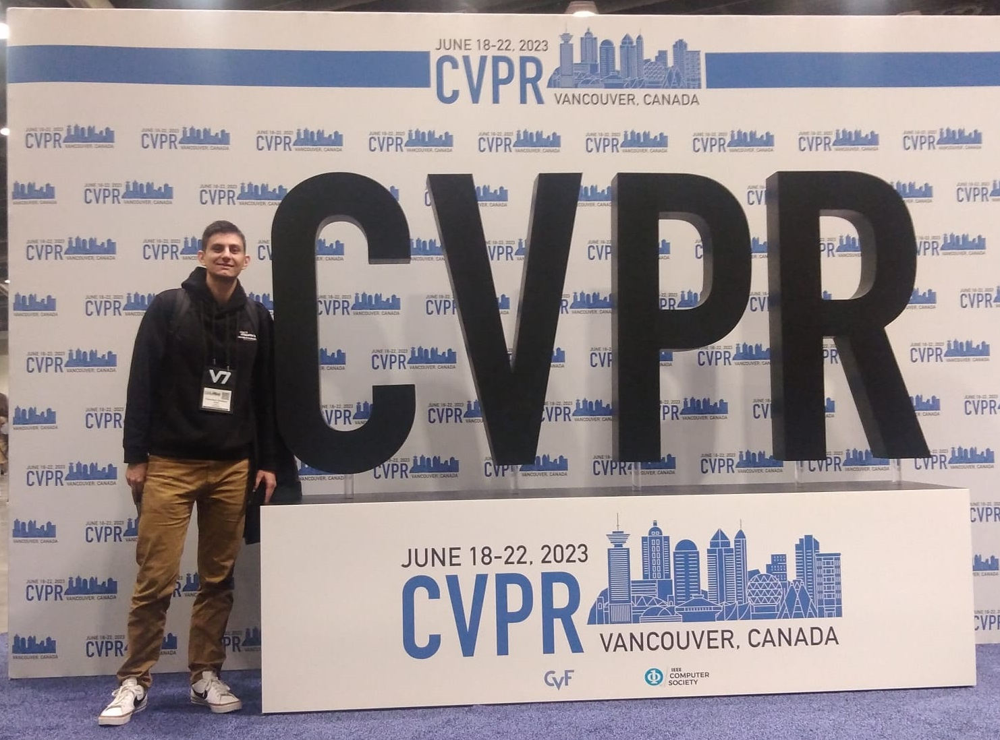

Francisco Zenteno Smith
Data Scientist - zenteno.fco@gmail.com

I am a data scientist / industrial engineer with 8+ years of experience applying operations research within diverse sectors such as retail, manufacturing, and healthcare. I have a business-oriented mindset, outstanding communication, problem-solving skills and the capacity to work with multidisciplinary teams.
I am pursuing a Master’s in Computer Science to integrate the best software development principles to mathematical modeling techniques to improve project success.
Technical Skills
Operations Research: Optimization (linear programming, mixed-integer programming, metaheuristics) and discrete-event simulation
Programming Languages: Python, Java, C#, SQL, AMPL
Software-related: CPLEX, Gurobi, Arena Simulation Software, Numpy, Pandas, PyTorch, TensorFlow, OpenCV, Git, Linux, ROS.
Machine Learning / AI: Regression and classification
Computer Vision: Tasks in 2D like image classification, object detection and semantic segmentation.
Finance: Accounting and Project Valuation.
News
April 2024: Informs Analytics in Orlando
I attended my first Informs Analytics conference, where I had the opportunity to attend the Edelman Gala and see multiple usages of Operations Research on different industries.

June 2023: CVPR in Vancouver
I attended my first AI conference, where I had the opportunity to witness firsthand the direction in which the forefront of Computer Vision research is heading.

Awards
 Full Scholarship (2022)
Full Scholarship (2022)
Government of Chile
Awarded to complete my Master program at UCSD
Top 4% in Kaggle Competition (2016)
Kaggle
‘Santa Stolen Sleigh’ was a huge NP-Hard problem related to a Vehicle Routing Problem with capacity constraints. I designed a meta-heuristic based on Simulated Annealing (in C#) and run it on a server. Got position #40 among 1000 participants.
Operations Research Cup 3rd place (2016)
Complex Engineering Systems Institute (Chile)
Competition to solve a NP-Hard problem with more than 500 graduate students from all over the country. I designed an algorithm for a stable matching problem.
Operations Research Cup 3rd place (2014)
Complex Engineering Systems Institute (Chile)
Competition to solve a NP-Hard problem with more than 500 graduate students from all over the country. I designed a meta-heuristic based on Tabu Search for a Vehicle Routing Problem with Time Windows.
Best Teaching Assistant (2013)
Transport and Logistics Department, School of Engineering, Pontifical Catholic University of Chile
“For his dedication and commitment to teaching”.
Teaching
 Private tutor (2010 - 2018)
Private tutor (2010 - 2018)
I had the incredible opportunity to teach around 150 people across all socioeconomic backgrounds, ranging in age from 10 to 50 years old (most of them were university students). I taught:
- Discrete-event Simulation
- Linear Programming and Mixed-Integer Programming
- Stochastic Models
- Introduction to Programming and OOP in Java
- School Math and Physics
Teaching Assistant (2010 - 2013)
I was a TA for the following courses in the School of Engineering, Pontifical Catholic University of Chile.
- Traffic Models
- Advanced Network Models
- Logistic System Analysis
- Logistic Engineering
- Excel Workshop I and II
Talks
 Simulation of Antofagasta Port (2013)
Simulation of Antofagasta Port (2013)
This was a talk to show to the students of the course “Stochastic Models” a project I worked on the graduate-level course “Simulation”. Systems and Industrial Engineer Department, School of Engineering, Pontifical Catholic University of Chile.
Solving massive instances of the CVRP (2016, 2017)
Invited (twice) by the professor of the course “Vehicle Routing Problems” from the Transport and Logistics Department, School of Engineering, Pontifical Catholic University of Chile. I talked about how I achieved a top 4% solution in a Kaggle competition with.
Hobbies
 Guitar
Guitar  Movies & Series
Movies & Series  Basketball
Basketball  Pickelball
Pickelball  Astronomy
Astronomy  Chess
Chess